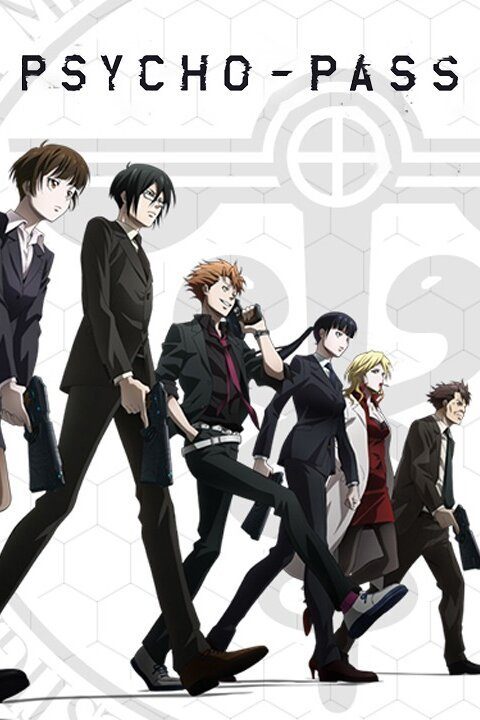
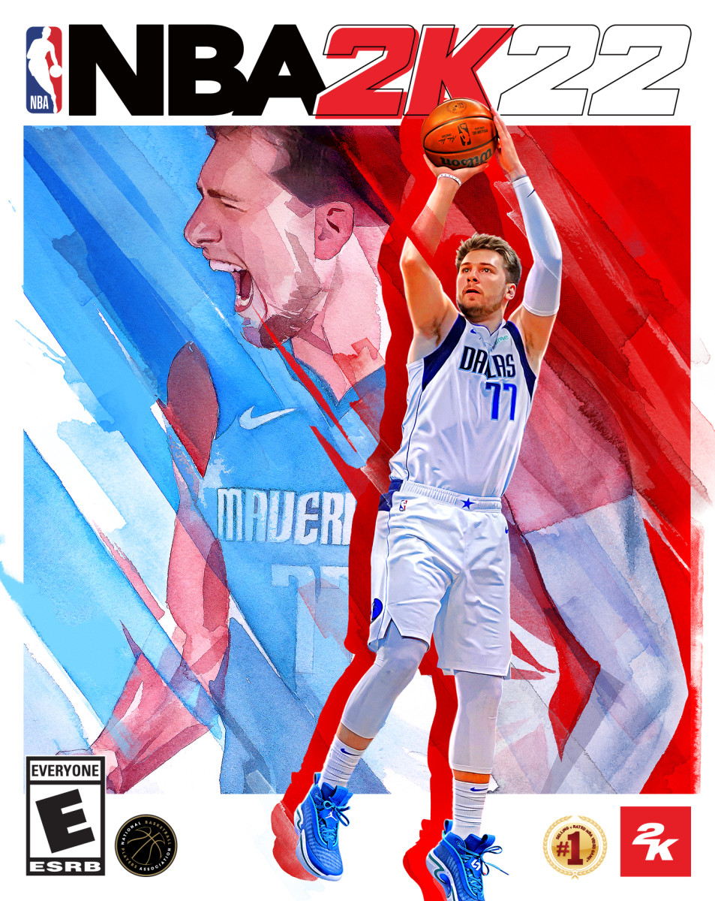

GAMING

This is one of my favorite games called Rainbow Six Siege.
It is a online shooting game where you are either the defenders
or attackers in a 5 on 5 style game. I really like it because
it is super cool to me to see each agent in the game having
their own personailites and abilities. Not to mention, the game
is realistic and requires great teamwork and communication.
Highly recommend this game - 9/10.
ANIME

This is one of my favorite animes that I love to watch called
Psycho-Pass. It is very similar to the movies "Minority Report"
and "Bladerunner" where in the future, the world relies heavy
on technology to run their dystopia world. You can also relate
this anime to China's social credit or Philip K. Dick's
"Do Androids Dream of Electric Sheep?".
Super thriller movie on using dominators to check one's criminal
level.
I would recommend 9.5/10.
BASKETBALL

One of my favorite basketball games called "NBA 2K".
It has my favorite basketball player called Luka Dončić.
You can do style dunks, ankle-breakers, deep threes, you
name it!
I would recommend 10/10.